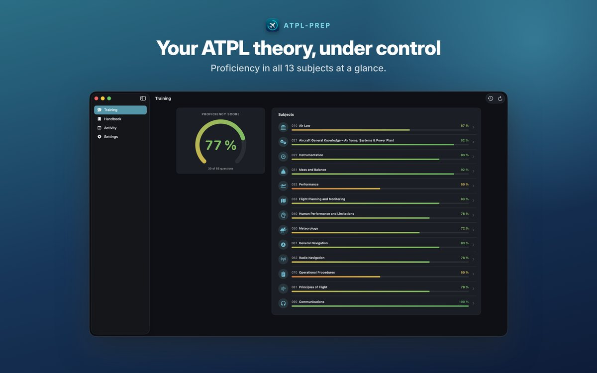
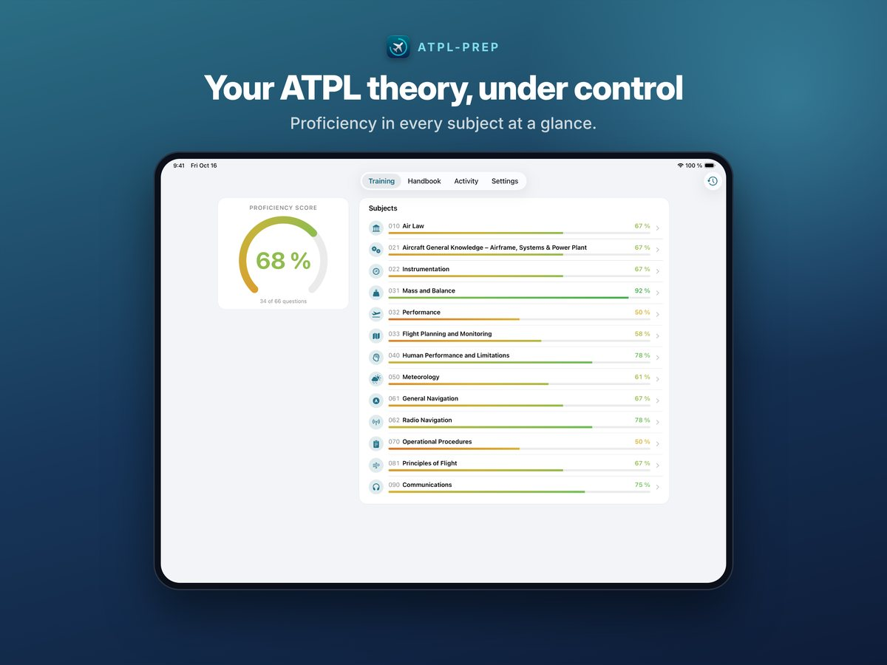

Auch auf iPad und Mac


So funktioniert's
1 Importieren
Lade deinen Fragenkatalog als Excel- oder CSV-Tabelle – gern mit Bildern – und deine Handbücher als PDF in die App.
2 Üben
Lerne nach Fächern oder starte eine Prüfungssimulation. Jede Frage kann die passende Handbuchseite öffnen.
3 Überblick behalten
Sieh, wo du in jedem Fach stehst und was noch fehlt.
Funktionen
Deine eigenen Fragen
Importiere die Fragenkataloge, mit denen du lernst, als Excel- oder CSV-Tabelle – auch mit Bildern. Eine Vorlage mit Beispielen und eine Schritt-für-Schritt-Anleitung sind in der App.
Deine eigenen Handbücher
Füge deine Handbücher als PDF hinzu und verknüpfe jede Frage mit der passenden Seite.
Üben nach Fächern
Deine Fragen nach den 13 ATPL-Fächern sortiert, mit einem Lernstand, der sich merkt, woran du noch arbeiten solltest.
Prüfungssimulation
Testdurchläufe über ein Fach oder einen Fragensatz, mit Auswertung danach.
Lerngruppen
Vergleiche deine tägliche Aktivität mit deinem Kurs per Einladungslink. Geteilt werden nur dein Name und die Anzahl der Fragen.
iPhone, iPad und Mac
Dein Lernstand synchronisiert sich über deine eigene iCloud. Kein Konto, keine Werbung, kein Tracking.
ATPL-Prep ist ein unabhängiges Lernangebot ohne Verbindung zur EASA, zum LBA oder zu Prüfungsanbietern. Die App bringt keinen eigenen Fragenkatalog mit, sondern ist für die Fragen gemacht, die du importierst. Zum Ausprobieren ist eine kleine Demo mit Beispielfragen zu jedem Fach enthalten.